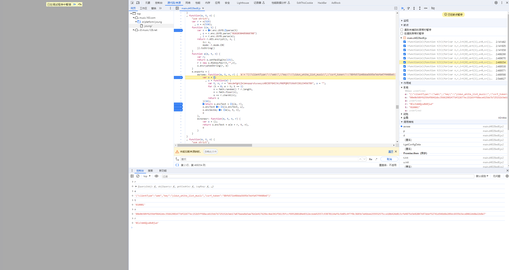
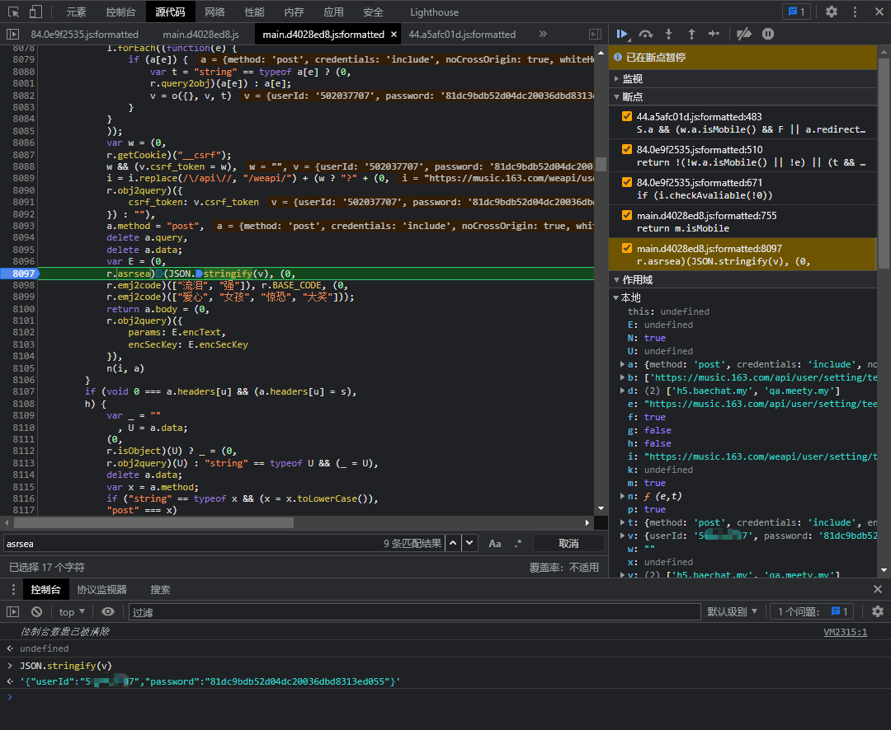

起因
我需要解开网易云的青少年模式，密码四位数字，我给忘了。想爆破一下，用小黄鸟抓包后发现，数据都给加密了。
操作过程
1
数据包如下:
1
2
3
4
5
6
7
8
9
10
11
12
13
| POST /weapi/user/setting/teenpattern/close HTTP/1.1
Host: music.163.com
Content-Length: 434
accept: application/json, text/javascript
origin: https://music.163.com
x-requested-with: XMLHttpRequest
user-agent: Mozilla/5.0 (Linux; Android 9; MI 6 Build/PKQ1.190118.001; wv) AppleWebKit/537.36 (KHTML, like Gecko) Version/4.0 Chrome/74.0.3729.136 Mobile Safari/537.36 CloudMusic/0.1.2 NeteaseMusic/8.2.30
content-type: application/x-www-form-urlencoded
referer: https://music.163.com/
accept-encoding: gzip, deflate
accept-language: zh-CN,zh;q=0.9,en-US;q=0.8,en;q=0.7
params=nhyLwglDvPz0T5fsiTNexRnfGk8e5opkRzm马赛克4IlNa3c8KsA%3D%3D&encSecKey=3aea6c31f570a95f马赛克656c2e6a7149d9a410b4254418d3aa538d14c4d489ddd4769a1ab9e5e63cdcd944e4353dee13fcbe7afe1711acb5008
|
用mt管理器找青少年模式的activity。发现是一个叫做embedbrowserActivity的东西，用jadx没发现什么内容，根据这个activity的英文名，查了一下发现，这其实是一种混合开发https://blog.csdn.net/s13383754499/article/details/78869683。它实际上是加载了一个html。
2
所以开始找那个请求并加载了加密js的html。同样是用小黄鸟，从点击进入青少年模式开始抓包，给我抓了一大堆，一个一个看，果真发现了一个特殊的包。
数据包url为https://music.163.com/st/platform/young/home?bounces=false&type=1&userId=马赛克
直接浏览器打开，发现就是那个页面。只不过无法正常像app内一样操作。会提示‘该功能仅限客户端内使用’
3
在一顿乱点后发现，虽然无法正常使用解密功能，但是依然可以通过直接访问https://music.163.com/st/platform/young/发送加密请求包。于是定位到如下的代码

先简单说一下结论。
encText， 也就是数据包里的params。使用了两次aes加密。第一次的key为0CoJUm6Qyw8W8jud，iv为0102030405060708。CBC模式。
第二次的key为随机生成，iv还是0102030405060708，也还是CBC模式。
encSecKey，也就是数据包里的encSecKey，使用rsa加密（应该，我没太看懂这块的代码。这里加密的内容是前面第二次aes加密的key）。
现在我要爆破密码需要完成两步，
第二步好解决，直接用cdp就好了。关键在于我该如何找到明文数据包。
4
在上班摸鱼的时候研究了一下，想解密比较难，所以我决定绕开‘该功能仅限客户端内使用’。这里就不说怎么找到的了（花了我一个下午）。直接说操作，
- 首先打开https://music.163.com/st/platform/young/home?bounces=false&type=1&userId=502037707，直接搜索**该功能仅限客户端内使用**。然后点击关闭青少年模式按钮，这里会跳到`checkAvaliable`函数内，然后这里有个关键点。需要让这个`checkAvaliable`返回true，就是需要`e=true`且`w.a.isMobile()=true`。
- 第一个
e=true好解决，直接console输入e=true即可。w.a.isMobile()是调用了一个函数，这里需要跳进isMobile()函数内。在这里一行打个断点，等流程进来的时候在console中输入m.isMobile=true就可以改变w.a.isMobile()的返回结果了。不过这个断点的作用不仅仅是为了改变isMobile()的输出结果（其实流程在checkAvaliable函数内的时候就可以输入m.isMobile=true了），也是为了后面做准备。
- 在修改了
e=true和w.a.isMobile()=true后，checkAvaliable已经返回true了，此时代码已经走到if (i.checkAvaliable(!0))的下一行if (i.state.loading)了。这里需要修改i.state.loading的值，将其改为false以便绕过’无法验证青少年模式开启状态’。在这之后，是一个三元表达式，流程需要走下面的start。也是简单的修改e为false即可。
- 当流程走到这里的时候，已经完成一半了。直接F8，继续执行脚本，把代码全部放走。不出意外的话，就会停在刚刚下的
return m.isMobile这个断点处了。这里是有第二个判断的。看右边堆栈，点击checkAvailable()函数，在S.a && (w.a.isMobile() && F || a.redirect())这一行打上断点。随后F8。重新来一次。
- 第二次点击点击关闭青少年模式按钮，前面的照常设置，直到流程来到
checkAvailable()函数内，停在S.a && (w.a.isMobile() && F || a.redirect())这一行时，console输入F = true即可。现在就可以自由输入密码了。（在r.asrsea)(JSON.stringify(v), (0,打上断点）也可以得到数据明文了。

妈个鸡简单得很，密码口算了一下，是md5加密。{“userId”:”5xxxx7”,”password”:”81dc9bdb52d04dc20036dbd8313ed055”}
5
找到了明文，就可以开始写CDP加密脚本了。
1
2
3
4
5
6
7
8
9
10
11
12
13
14
15
16
17
18
19
20
21
22
23
24
25
26
27
28
29
30
31
32
33
34
35
36
37
38
39
40
41
42
43
44
45
46
47
48
49
50
51
52
53
54
55
56
57
58
59
60
61
62
63
64
65
66
67
68
69
70
71
72
73
74
75
76
77
78
79
80
81
|
from flask import Flask,Response,request
import base64
import json
import websocket
import requests as Req
import logging
import random
import urllib.parse
target = "https://music.163.com/"
callFrameId = '{"ordinal":0,"injectedScriptId":1}'
level = logging.DEBUG
logging.basicConfig(level=level)
app = Flask(__name__)
def sendCDP(js_code):
ws_res = Req.get(url = "http://127.0.0.1:9222/json")
ws_res_json = json.loads(ws_res.content)
for i in ws_res_json:
if target in i['url']:
ws_url = i['webSocketDebuggerUrl']
break
conn = websocket.create_connection(ws_url,header={"User-Agent": "this_is_y"})
request_id = int(random.random()*10000)
method = "Debugger.evaluateOnCallFrame"
param = {"callFrameId":callFrameId,"expression":js_code,"generatePreview":True,"includeCommandLineAPI":True,"silent":False,"returnByValue":True}
command = {'method': method,
'id': request_id,
'params': param}
request_id+=1
logging.info("sendCDP-payload>>> "+str(command)+"\n")
conn.send(json.dumps(command))
result = json.loads(conn.recv())
logging.info("sendCDP-result>>>> "+str(result)+"\n")
return result
def asrsea(params):
'''
构造CDP请求,发送，并解析返回结果,
'''
js_code = """(0,r.asrsea)('{}', (0,r.emj2code)(["流泪", "强"]), r.BASE_CODE, (0,r.emj2code)(["爱心", "女孩", "惊恐", "大笑"]))""".format(params)
logging.info("mydecrypt_js_code>>>"+js_code+"\n")
return sendCDP(js_code)['result']['result']['value']
@app.route('/encode',methods=["POST"])
def encrypt():
print("==============/encode==================")
dataHeaders = request.form.get("dataHeaders")
dataBody = request.form.get('dataBody').replace("\r\n","")
logging.info("dataHeaders>>"+dataHeaders)
logging.info("dataBody>>"+dataBody)
requestbody = dataBody
data = asrsea(requestbody)
if type(data) != dict:
logging.error("data error")
params = urllib.parse.urlencode(data).replace("encText","params")
logging.info("params"+params)
return dataHeaders+"\r\n\r\n\r\n"+params
if __name__ == '__main__':
app.debug = True
app.run(host="0.0.0.0",port="8890")
|
所以我密码应该是2315？（反正密码现在确实已经解开了）
题外话
网易云这个前端js的加解密，有点意思。
首先是加密函数的命名，asrsea。其实就是 aes rsa 倒过来。
关于一些变量，比如rsa公钥，不是直接什么publickey = xxxxx。他这里用了一个字符串替换，
1
2
3
4
5
6
| var E = (0,
r.asrsea)(JSON.stringify(v), (0,
r.emj2code)(["流泪", "强"]), r.BASE_CODE, (0,
r.emj2code)(["爱心", "女孩", "惊恐", "大笑"]));
简化一下
var E = (0,r.asrsea)(JSON.stringify(v), (0,r.emj2code)(["流泪", "强"]), r.BASE_CODE, (0,r.emj2code)(["爱心", "女孩", "惊恐", "大笑"]));
|
比如这里。asrsea函数闯入了四个值，只有第一个是需要处理的明文，后面三个都是固定值，写死了的。其中第二个和第四个，(0,r.emj2code)([“流泪”, “强”])可以在main.js里搜索一下。这里实际上都对应了字符串，如下图
- 因为关闭青少年模式的接口（/weapi/user/setting/teenpattern/close）不需要cookie，本来以为这几个接口能未授权，结果拿到open的数据包后，发现开启青少年模式居然又要cookie。绝了，肯定是以前被人挖过了